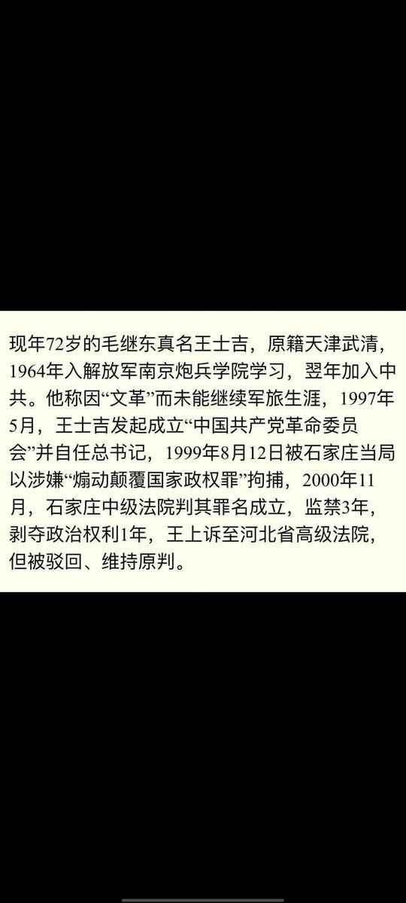

@HpBwFwGBPytCpgs 且不說現在這些刊物還有多少能，或者正在「鼓吹自由化」，當年對自由派寬鬆是因為那個時候老共的政治策略使得自由派有機會能發聲，換句話來說，他們對老共有利用價值
現在那個時代過去了，開始「重提意識形態」了，毛左這種本質上是上一個版本的建制派的自然開始上桌👋

現在那個時代過去了，開始「重提意識形態」了，毛左這種本質上是上一個版本的建制派的自然開始上桌👋

唉我又沒否認是因為今天社會矛盾積壓到臨界點導致的毛左興起，不過這種「熱」本質上是建制對輿論場的精細化修剪」——你們聲量的壯大是建制的一種默許，就像10年代中期之前的自由派在牆內輿論環境更有話語權一樣👋 https://t.co/LzEGAKcJ7o